# Import data
survey <- read.csv("https://hash-mac.github.io/stat112site-s25/data/survey.csv")
# How many students have now filled out the survey?
50[1] 50# Import data
survey <- read.csv("https://hash-mac.github.io/stat112site-s25/data/survey.csv")
# How many students have now filled out the survey?
50[1] 50Use this file for practice with the bivariate viz in-class activity. Refer to the class website for details.
temp_3pm temp_9am
1 24 14
2 26 18
3 20 15
4 15 13
5 15 11
6 15 11weather <- data.frame(temp_3pm = c(24, 26, 20, 15, 15, 0, 40, 60, 57, 44, 51, 75),
location = rep(c("A", "B"), each = 6))
weather temp_3pm location
1 24 A
2 26 A
3 20 A
4 15 A
5 15 A
6 0 A
7 40 B
8 60 B
9 57 B
10 44 B
11 51 B
12 75 Bweather <- data.frame(rain_today = c("no", "no", "no", "no", "yes", "no", "yes", "no", "yes", "yes", "no", "yes"),
location = c(rep("A", 7), rep("B", 5)))
weather rain_today location
1 no A
2 no A
3 no A
4 no A
5 yes A
6 no A
7 yes A
8 no B
9 yes B
10 yes B
11 no B
12 yes B# Load data
elections <- read.csv("https://mac-stat.github.io/data/election_2020_county.csv")
# Check it out
head(elections) state_name state_abbr historical county_name county_fips total_votes_20
1 Alabama AL red Autauga County 1001 27770
2 Alabama AL red Baldwin County 1003 109679
3 Alabama AL red Barbour County 1005 10518
4 Alabama AL red Bibb County 1007 9595
5 Alabama AL red Blount County 1009 27588
6 Alabama AL red Bullock County 1011 4613
repub_pct_20 dem_pct_20 winner_20 total_votes_16 repub_pct_16 dem_pct_16
1 71.44 27.02 repub 24661 73.44 23.96
2 76.17 22.41 repub 94090 77.35 19.57
3 53.45 45.79 repub 10390 52.27 46.66
4 78.43 20.70 repub 8748 76.97 21.42
5 89.57 9.57 repub 25384 89.85 8.47
6 24.84 74.70 dem 4701 24.23 75.09
winner_16 total_votes_12 repub_pct_12 dem_pct_12 winner_12 total_population
1 repub 23909 72.63 26.58 repub 54907
2 repub 84988 77.39 21.57 repub 187114
3 repub 11459 48.34 51.25 dem 27321
4 repub 8391 73.07 26.22 repub 22754
5 repub 23980 86.49 12.35 repub 57623
6 dem 5318 23.51 76.31 dem 10746
percent_white percent_black percent_asian percent_hispanic per_capita_income
1 76 18 1 2 24571
2 83 9 1 4 26766
3 46 46 0 5 16829
4 75 22 0 2 17427
5 88 1 0 8 20730
6 22 71 0 6 18628
median_rent median_age
1 668 37.5
2 693 41.5
3 382 38.3
4 351 39.4
5 403 39.6
6 276 39.6library(ggplot2)
# Add a layer of points for each county
# Take note of the geom: geom_point
ggplot(elections, aes(y = total_votes_16, x = total_votes_12)) +
geom_point()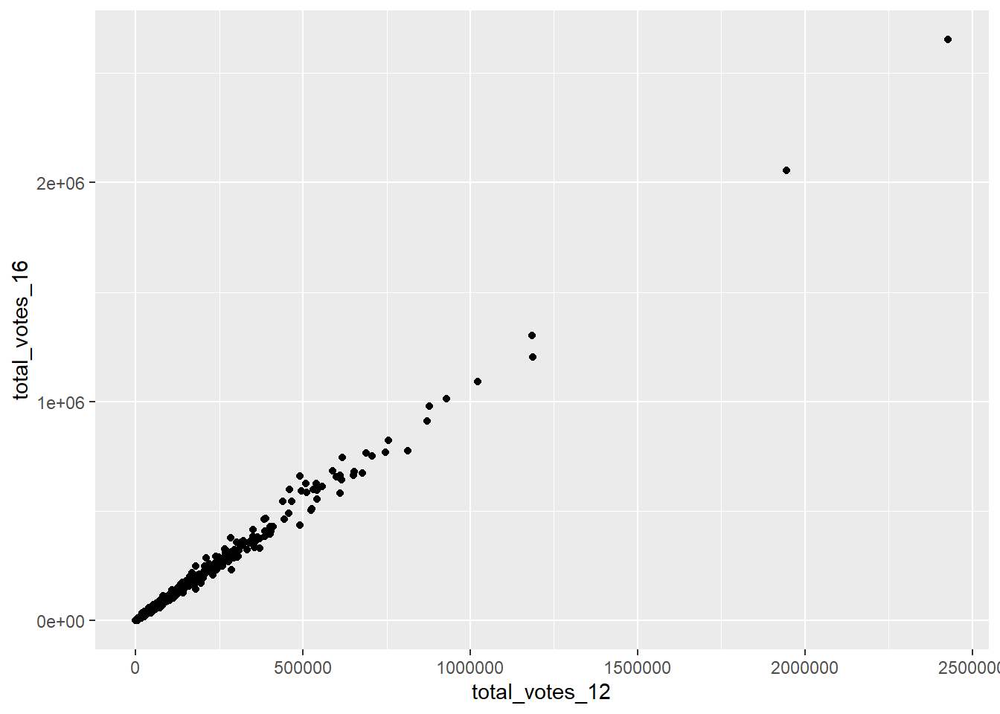
# Add a layer that represents each county by the state it's in
# Take note of the geom and the info it needs to run!
ggplot(elections, aes(y = repub_pct_20, x = repub_pct_16)) +
geom_text(aes(label = state_abbr))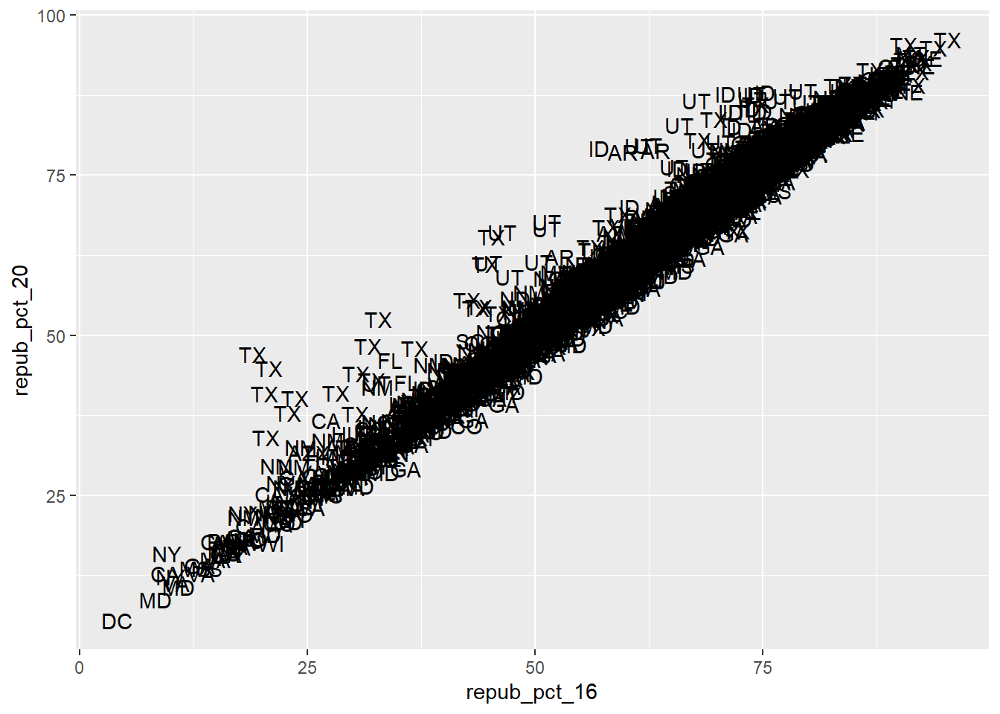
`geom_smooth()` using method = 'gam' and formula = 'y ~ s(x, bs = "cs")'
ggplot(elections, aes(y = repub_pct_20, x = repub_pct_16)) +
geom_point(shape = 17, size = 3) +
geom_smooth() `geom_smooth()` using method = 'gam' and formula = 'y ~ s(x, bs = "cs")'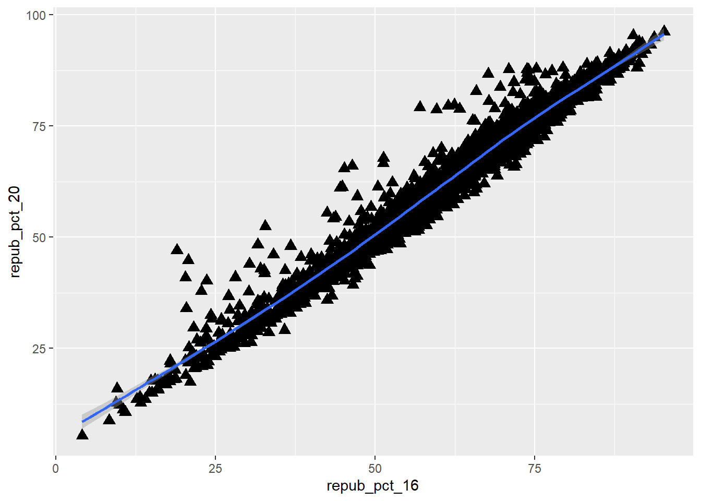
ggplot(elections, aes(y = repub_pct_20, x = repub_pct_16)) +
geom_point() +
geom_smooth(method = "lm")`geom_smooth()` using formula = 'y ~ x'
# Scatterplot of repub_pct_20 vs median_rent
ggplot(elections, aes(y = repub_pct_20, x = median_rent)) +
geom_point() +
geom_smooth(method = "lm")`geom_smooth()` using formula = 'y ~ x'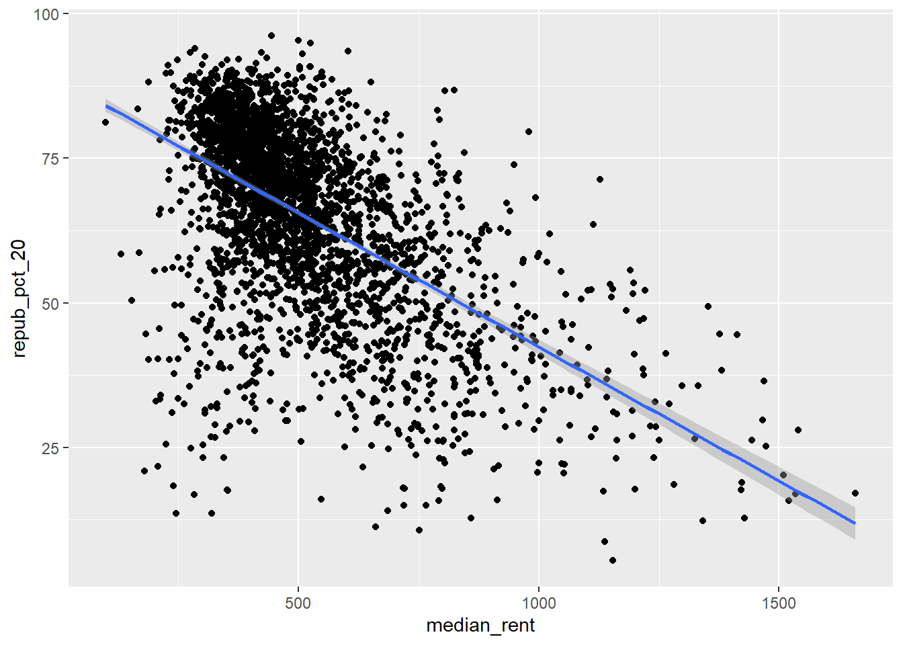
# Scatterplot of repub_pct_20 vs median_age
ggplot(elections, aes(y = repub_pct_20, x = median_age)) +
geom_point() +
geom_smooth(method = "lm")`geom_smooth()` using formula = 'y ~ x'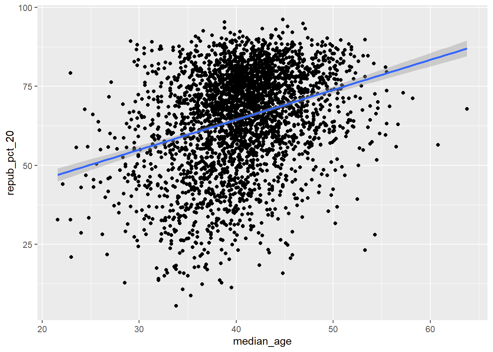

# Side-by-side violin plots
ggplot(elections, aes(y = repub_pct_20, x = historical)) +
geom_violin()
# Side-by-side boxplots (defined below)
ggplot(elections, aes(y = repub_pct_20, x = historical)) +
geom_boxplot()
# Name two "bad" things about this plot
ggplot(elections, aes(x = repub_pct_20, fill = historical)) +
geom_density()
# What does scale_fill_manual do?
ggplot(elections, aes(x = repub_pct_20, fill = historical)) +
geom_density() +
scale_fill_manual(values = c("blue", "purple", "red"))
# What does alpha = 0.5 do?
# Play around with different values of alpha, between 0 and 1
ggplot(elections, aes(x = repub_pct_20, fill = historical)) +
geom_density(alpha = 0.5) +
scale_fill_manual(values = c("blue", "purple", "red"))
# What does facet_wrap do?!
ggplot(elections, aes(x = repub_pct_20, fill = historical)) +
geom_density() +
scale_fill_manual(values = c("blue", "purple", "red")) +
facet_wrap(~ historical)
# Let's try a similar grouping strategy with a histogram instead of density plot.
# Why is this terrible?
ggplot(elections, aes(x = repub_pct_20, fill = historical)) +
geom_histogram(color = "white") +
scale_fill_manual(values = c("blue", "purple", "red"))`stat_bin()` using `bins = 30`. Pick better value with `binwidth`.
# I love the density plots, but I also don't mind the dot plots mainly because I feel I'm more used to those, box plots are cool too
# A benefit of density plat is being able to see a linear relationship at certain points if you need to.
# A con would be it would take a little longer to gether info of individual categorical info I think.# A stacked bar plot
# How are the "historical" and "winner_20" variables mapped to the plot, i.e. what roles do they play?
# They're relationship on the graph is to basically seperate total dem and rep in different colored states. To show how dominant repub is.
ggplot(elections, aes(x = historical, fill = winner_20)) +
geom_bar()
# A side-by-side bar plot
# Note the new argument to geom_bar
ggplot(elections, aes(x = historical, fill = winner_20)) +
geom_bar(position = "dodge")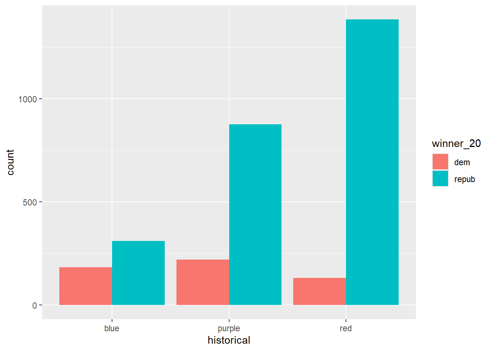
# A proportional bar plot
# Note the new argument to geom_bar
ggplot(elections, aes(x = historical, fill = winner_20)) +
geom_bar(position = "fill")
#Pro easy to distinguish categorical variables
#con total number may not be considered, since these are just percentages
#Favorite bar plaot would have to be side by side bar plot because I feel like visually the difference in amount is more noticable when it comes to looking for if something is more or lessweather <- read.csv("https://mac-stat.github.io/data/weather_3_locations.csv")
# How do 3pm temperatures (temp3pm) differ by location?
ggplot(weather, aes(x = temp3pm, fill = location)) +
geom_density(alpha = 0.5)Warning: Removed 19 rows containing non-finite outside the scale range
(`stat_density()`).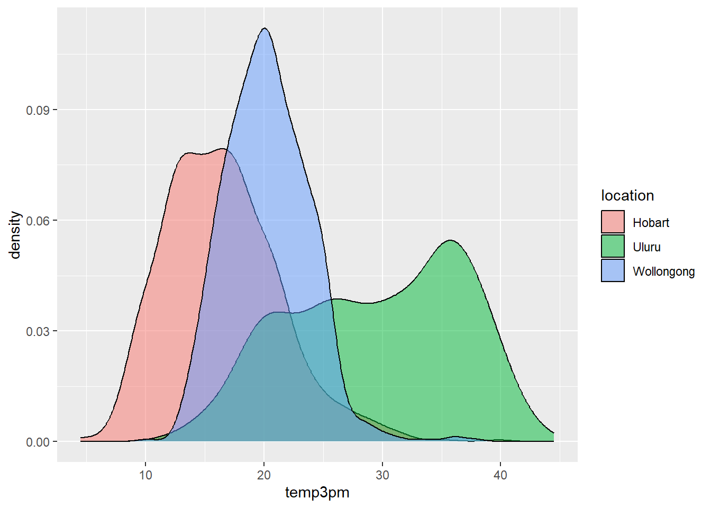
# Load data
elections <- read.csv("https://mac-stat.github.io/data/election_2020_county.csv")
# Check it out
head(elections) state_name state_abbr historical county_name county_fips total_votes_20
1 Alabama AL red Autauga County 1001 27770
2 Alabama AL red Baldwin County 1003 109679
3 Alabama AL red Barbour County 1005 10518
4 Alabama AL red Bibb County 1007 9595
5 Alabama AL red Blount County 1009 27588
6 Alabama AL red Bullock County 1011 4613
repub_pct_20 dem_pct_20 winner_20 total_votes_16 repub_pct_16 dem_pct_16
1 71.44 27.02 repub 24661 73.44 23.96
2 76.17 22.41 repub 94090 77.35 19.57
3 53.45 45.79 repub 10390 52.27 46.66
4 78.43 20.70 repub 8748 76.97 21.42
5 89.57 9.57 repub 25384 89.85 8.47
6 24.84 74.70 dem 4701 24.23 75.09
winner_16 total_votes_12 repub_pct_12 dem_pct_12 winner_12 total_population
1 repub 23909 72.63 26.58 repub 54907
2 repub 84988 77.39 21.57 repub 187114
3 repub 11459 48.34 51.25 dem 27321
4 repub 8391 73.07 26.22 repub 22754
5 repub 23980 86.49 12.35 repub 57623
6 dem 5318 23.51 76.31 dem 10746
percent_white percent_black percent_asian percent_hispanic per_capita_income
1 76 18 1 2 24571
2 83 9 1 4 26766
3 46 46 0 5 16829
4 75 22 0 2 17427
5 88 1 0 8 20730
6 22 71 0 6 18628
median_rent median_age
1 668 37.5
2 693 41.5
3 382 38.3
4 351 39.4
5 403 39.6
6 276 39.6Warning: Removed 19 rows containing non-finite outside the scale range
(`stat_boxplot()`).
# How might we predict the 3pm temperature (temp3pm) by the 9am temperature (temp9am)?
ggplot(weather, aes(y = temp3pm, x = temp9am)) +
geom_point()Warning: Removed 27 rows containing missing values or values outside the scale range
(`geom_point()`).
# Install ggridges package
library(ggridges)
# Make our first joy plot
# THINK: What DON'T you like about this?
ggplot(elections, aes(x = repub_pct_20, y = state_abbr)) +
geom_density_ridges()Picking joint bandwidth of 4.43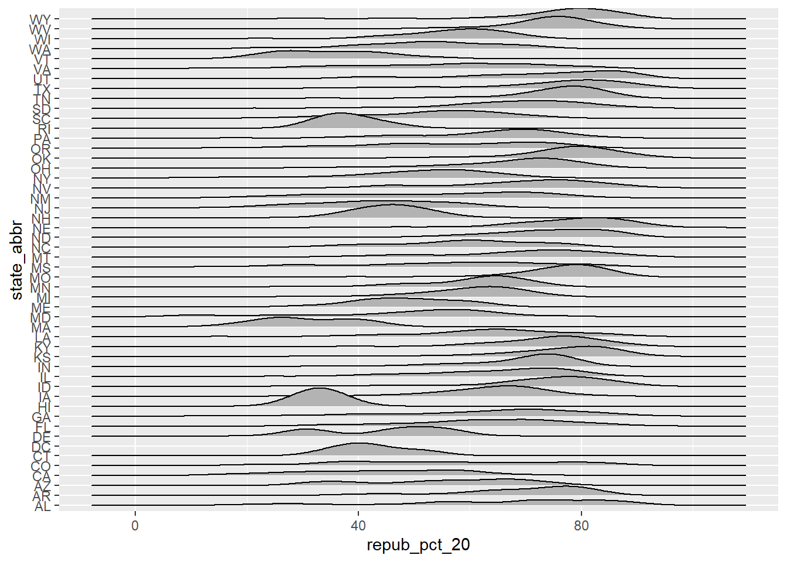
library(ggplot2)
library(ggridges)
library(forcats)
# YOUR TURN: color/fill the ridges according to a state's historical voting patterns
# and add meaningful axis labels
ggplot(elections, aes(x = repub_pct_20, y = fct_reorder(state_abbr, repub_pct_20), fill = historical)) +
geom_density_ridges(alpha = 0.5) +
labs(y = "state", x = "2020 Republican support (%)") +
scale_fill_manual(values = c("blue", "purple", "red"))Picking joint bandwidth of 4.43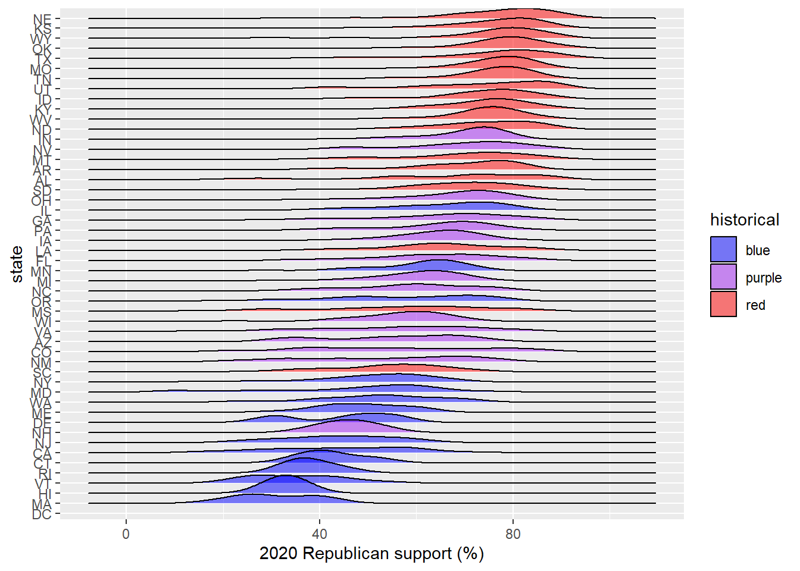
elections_by_state <- read.csv("https://mac-stat.github.io/data/election_2020_by_state.csv")
ggplot(elections_by_state, aes(y = repub_pct_20, x = repub_pct_16)) +
geom_point()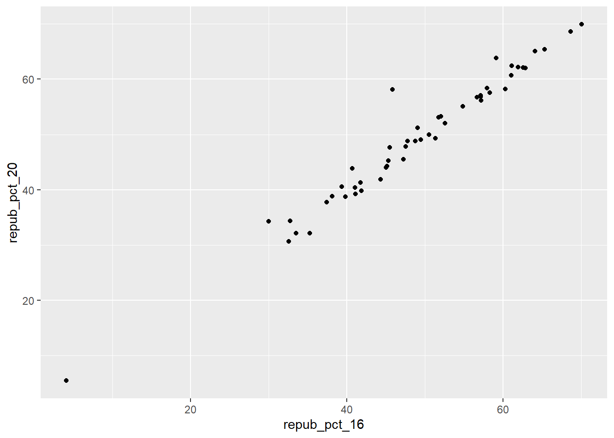
# Check it out
ggplot(elections_by_state, aes(x = repub_pct_20, y = state_abbr)) +
geom_point(color = "red")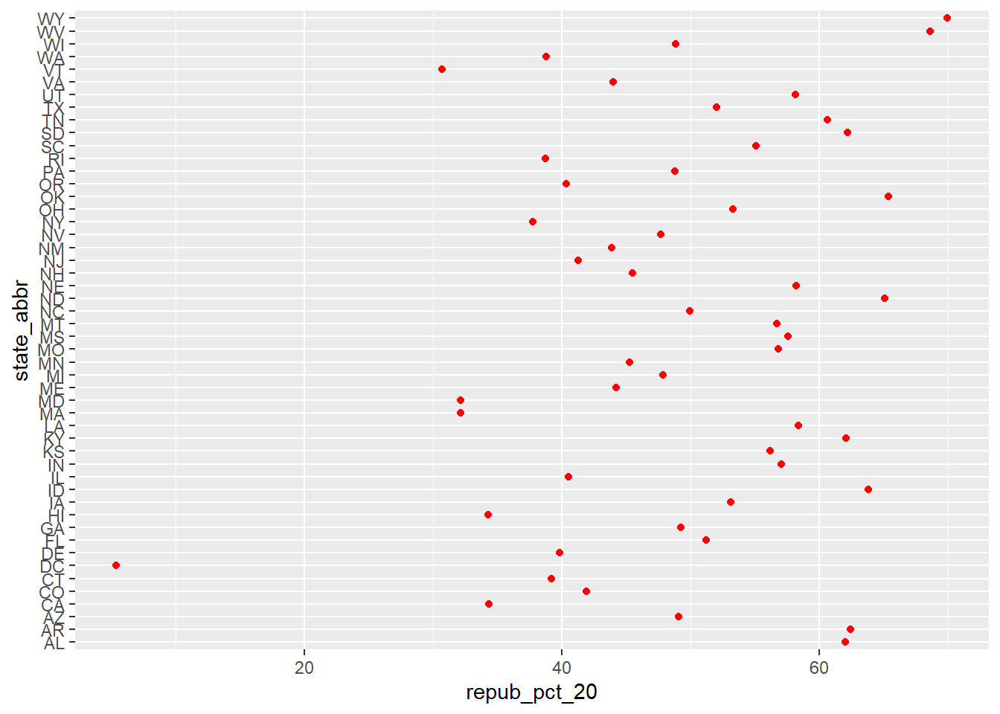
# Check it out
ggplot(elections_by_state, aes(x = repub_pct_20, y = fct_reorder(state_abbr, repub_pct_20))) +
geom_point(color = "red")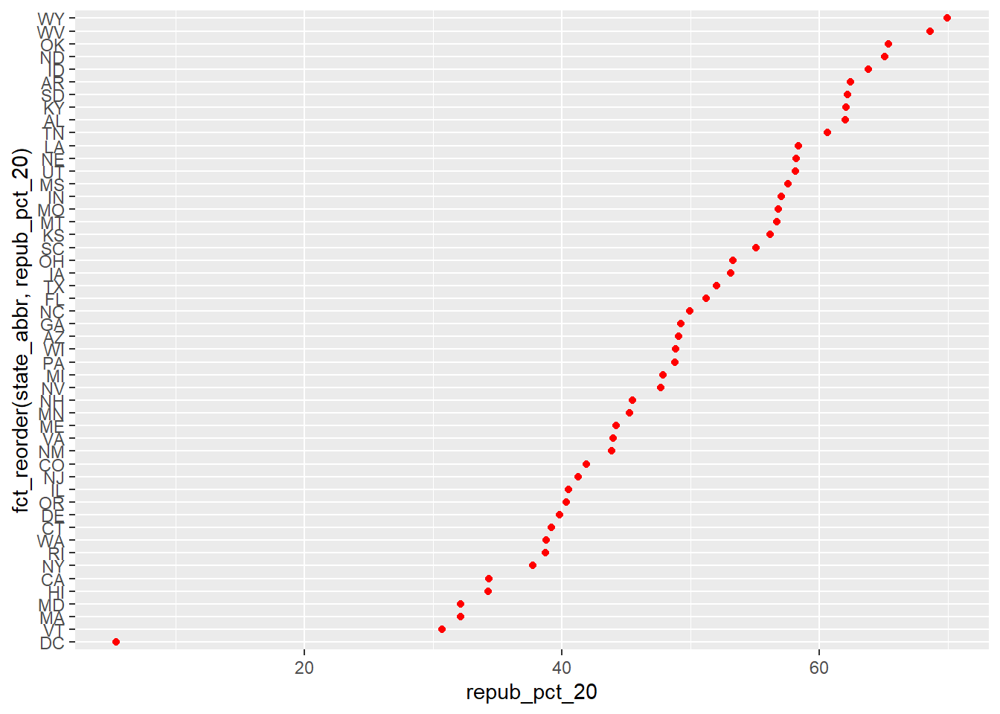